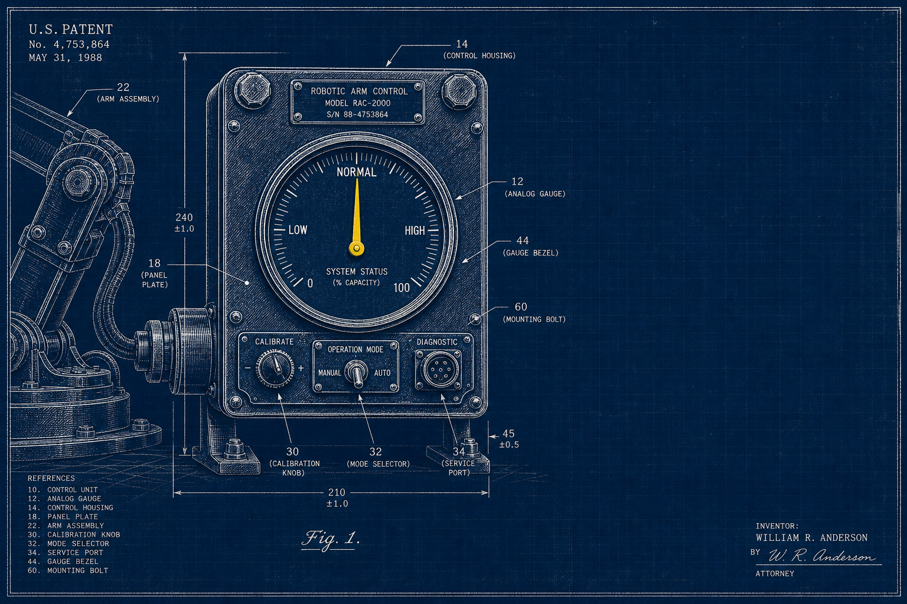
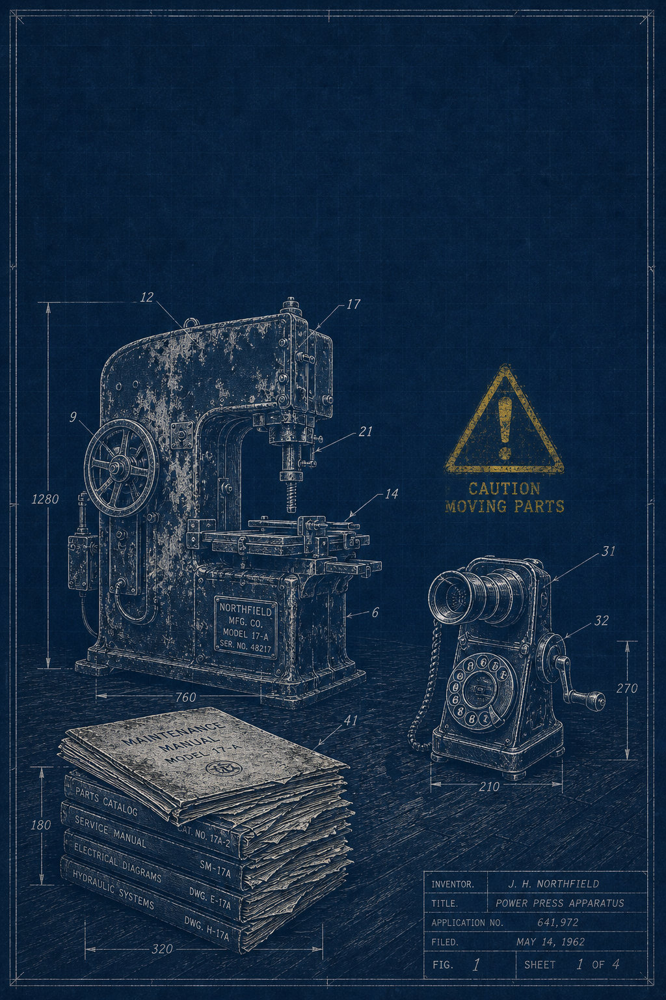

Every machine keeps
a record.
Now it talks back.
Novara Robotics reads the sensors, cross-references the manuals, and drafts the root cause before your technician reaches the floor. A maintenance record that writes and defends itself.

The plant runs on memory. Memory is not a maintenance record.
Every facility carries the same four liabilities, unwritten, unaudited, and one retirement away from disappearing entirely.

Institutional knowledge has no backup
The technician who "just knows" that sound retires. What they knew leaves with them, because it was never in the system.
Signal-to-noise collapses at scale
Alarm thresholds get widened until real failures hide inside the noise of false positives nobody has time to triage.
Documentation is unaudited and unlinked
The correct manual revision may exist somewhere. It is rarely attached to the machine, the fault, or the work order that needs it.
Root cause is reconstructed from scratch, every time
Without a connected failure history, a fifth recurrence of the same defect gets investigated as if it were the first.
One connected record. Every machine, sensor, and repair.
Novara ties sensors, documents, and repair history to a single machine record, then puts the right evidence in front of every incident automatically.
Sensors, manuals, and history on one record
Fault modes, wiring diagrams, and every past repair live on the machine itself, not scattered across drives, binders, and someone's inbox.
The case file opens itself
The instant a fault crosses threshold, Novara assembles sensor evidence, similar past incidents, and the exact applicable procedure before a human is even assigned.
Every repair strengthens the next diagnosis
Confirmed causes and validated fixes become permanent evidence, and the system gets measurably better at your equipment, specifically.
Fault Path, the evidence, not a black box score
CASE NO. INC‑3891A conservative estimate, shown in full.
Median outcomes from mid-size manufacturing deployments (50–400 machines) in the first 12 months. We'd rather hand you a defensible number than an impressive one.
Single-machine savings estimate
FIGURE 3.1From drift to validated repair, in five steps.
A signal drifts past its baseline
Vibration and temperature rise together on Press 04. Novara flags the drift before it reaches a hard alarm threshold.
A case file opens itself
The system assembles the component, similar past incidents, PM status, and applicable procedure automatically.
A draft finding awaits human review
Evidence, confidence, and a recommended action are laid out plainly. A person approves it, since Novara never closes the loop alone.
The technician executes with the correct procedure in hand
Parts, tools, and manual steps are attached to the work order, cited by revision, not guessed at.
The repair is validated, and the record updates permanently
Post-repair sensor data confirms the fix. That case becomes standing evidence for the next similar fault.
Bring us a real fault from your floor.
We'll run it through the Fault Path live and show you the exact figure it would have saved, using your machine, not a demo script.